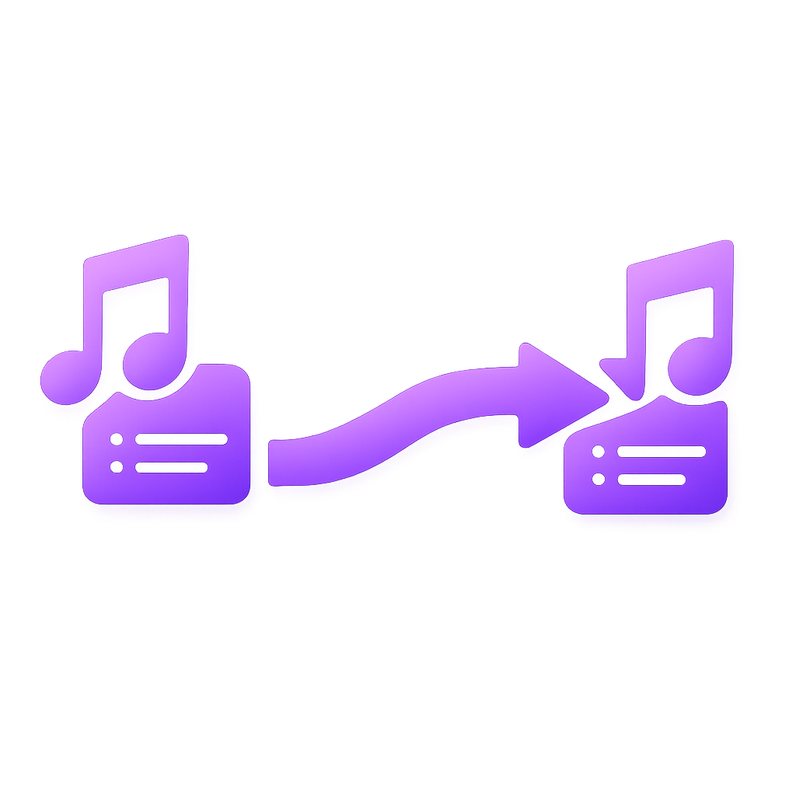
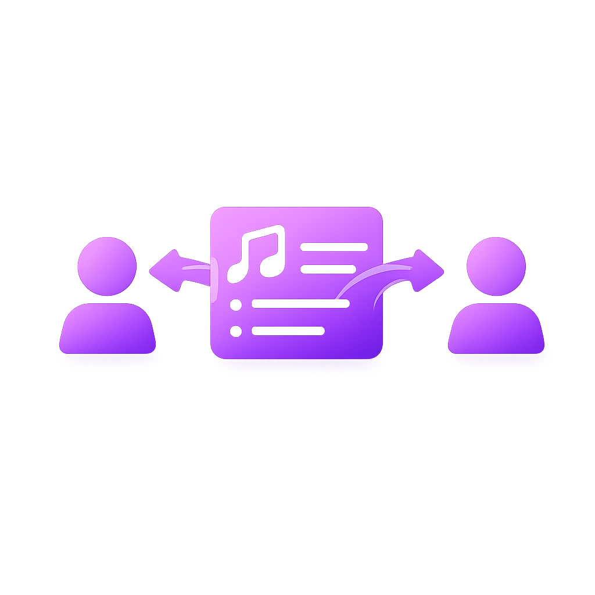
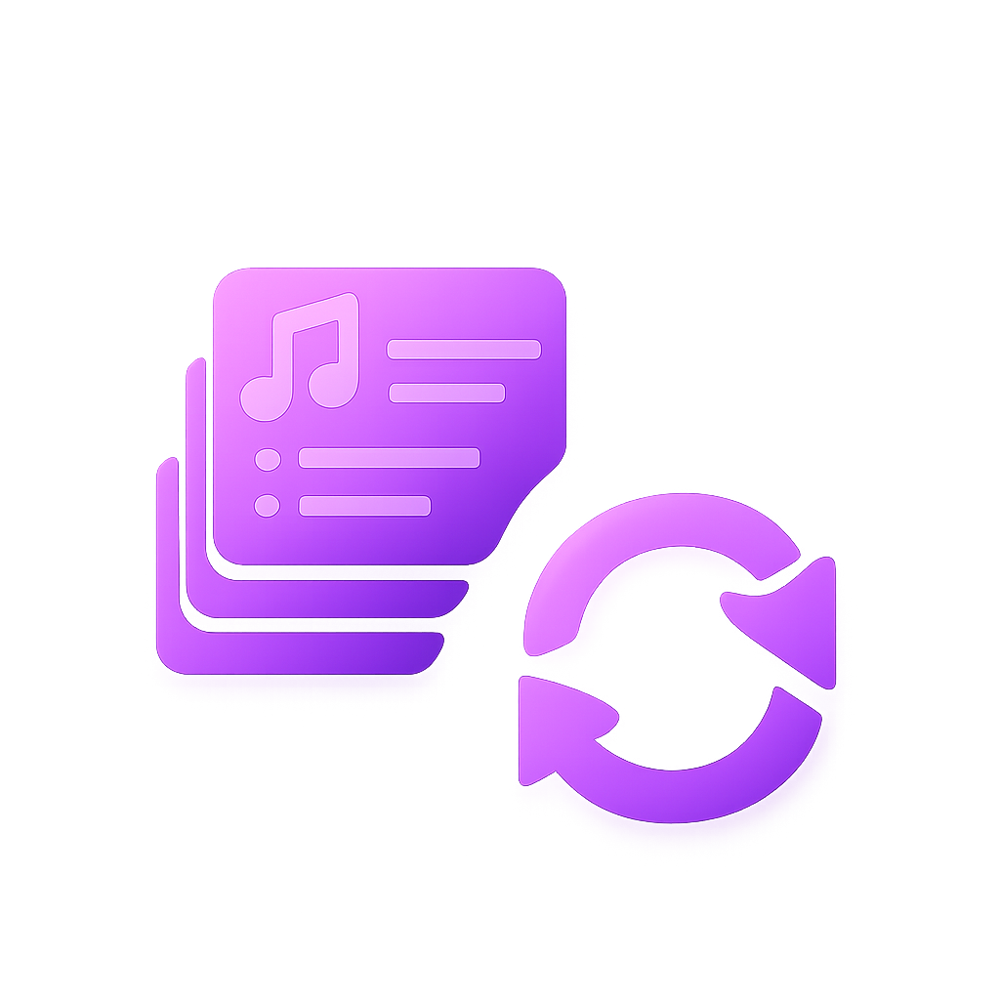
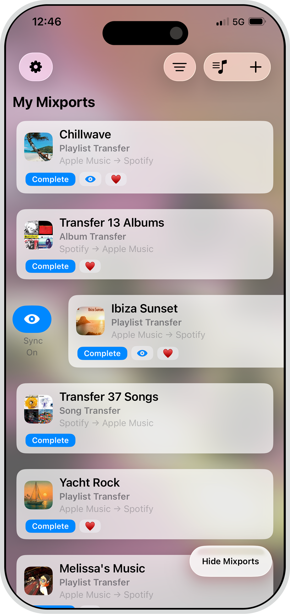
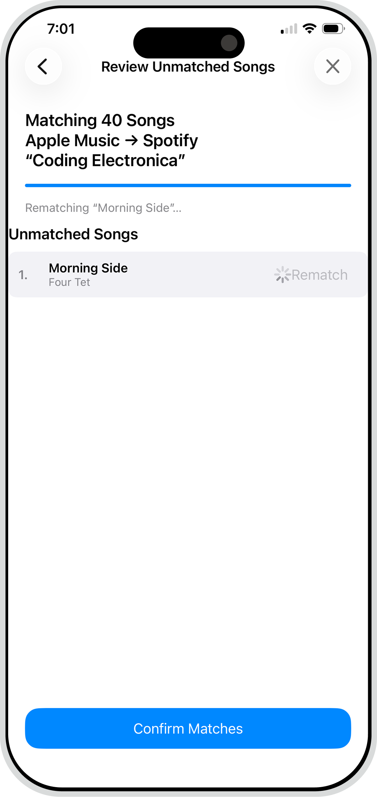

Your Music. Wherever you listen.
Playlist transfer and sync across Apple Music, Spotify, and YouTube Music — move from Spotify to Apple or anywhere else, then keep everything aligned automatically.

Mixport is the easiest way to...

Transfer your music
Transfer the music you love to the music provider you want.

Share your playlists
Share playlists with anyone, regardless of their music streaming platform.

Keep playlists in sync
Sync additions from your playlist to your destination music streaming platform.
Playlist transfer and sync
Albums
Tracks
Cross service support
How it works
1
Connect your services
Hook up Apple Music, Spotify, and YouTube Music. Once connected, you can use each service as a source or destination for transfers and ongoing sync.

2
Configure your Mixport
Tell Mixport which playlists, songs, or albums you would like to be transferred to a different music streaming service.

3
Review matches
After Mixport has matched all of your songs on your destination service, you are given the opportunity to fix any mismatches.

4
Enjoy!
Mixport will quickly finish the transfer and the songs will appear in your destination music library moments later. Tada! 🎉

Automatic playlist sync
- Ongoing synchronization.
- Changes on one service update everywhere.
- No rebuilding playlists.


Monitor and keep playlists aligned
- Continuous monitoring.
- Background updates.
- Designed for evolving playlists.

Support
Need help? Open the Support Center in the app (Settings ⚙️ → Support Center), start a ticket, and attach the relevant Mixport so our team can investigate quickly.
Supported services
Spotify
Apple Music
YouTube Music
Others as supported
FAQs
Quick answers on services, transfers, playlist sync, limits, and privacy.
Mixport connects Apple Music, Spotify, and YouTube Music today, with Amazon Music on our roadmap. Use your regular consumer accounts; just sign in and approve access so we can read playlists and create matches.
Pick a source and destination, choose whether you’re moving playlists, albums, or songs, and we auto-match tracks. You review any suggested fixes, then start the transfer. Pro users can run cloud transfers that are dramatically faster and don’t require keeping the app open.
Transfers move content over once. Playlist monitoring (Pro) keeps a playlist in sync automatically—updates run at the top of the hour, and you can force a sync from Transfer Details or the widget’s “Sync now” button.
Free: no cloud transfers, playlist transfers capped at 25 songs, and you can move 1 album or 1 song per transfer. Pro: unlocks cloud transfers, playlist monitoring, and higher-capacity, faster moves.
We use multi-signal matching with close-candidate suggestions when an exact match isn’t certain. You can quickly approve or swap picks before transferring for the best possible result.
If a login fails, re-authenticate the service and retry. If tracks are missing, check if they’re available in your region or on the destination service, then run “Sync now.” If a sync stalls, force a sync from the widget or Transfer Details. Still stuck? Contact support with the playlist name and source/destination.
We don’t collect personal identifiers. We store only the access needed to read and create playlists and matches. You can revoke access anytime by disconnecting a service in-app, which also clears our stored tokens.
Pricing
Free
Free tier overview.
Pro
Pro features with sync and automation value.
Trust and reliability
- Accuracy
- Safe connections
- Built for reliability
Download Mixport
Start transferring and syncing.